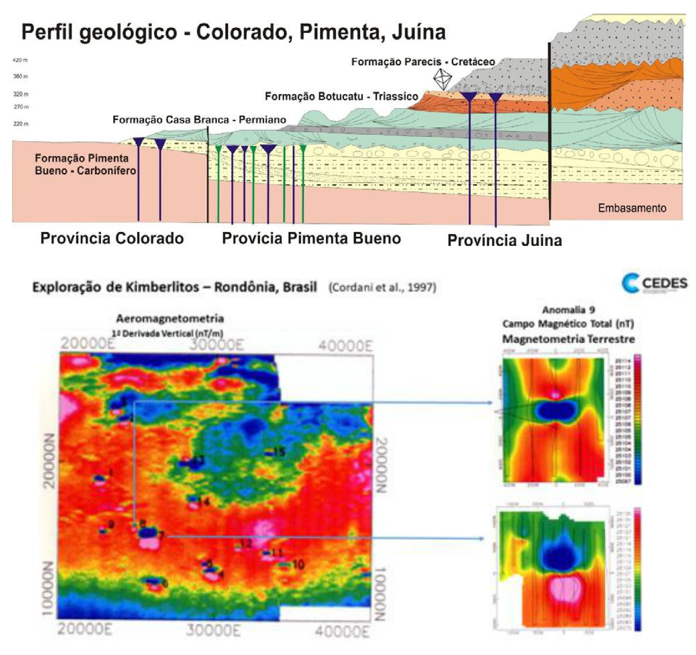

Meio Século de Exploração Mineral no Brasil - Parte 3

Resumo em Português
A terceira parte amplia o olhar para o restante do território nacional entre as décadas de 1970 e 1980, período marcado pela intensa expansão dos programas exploratórios. O ambiente criado pelo Código de Mineração permitiu forte atuação de empresas privadas, multinacionais e estatais, ao mesmo tempo em que órgãos públicos, como a CPRM e a Nuclebras, assumiram papel relevante na prospecção mineral. Embora novas descobertas de porte semelhante a Carajás fossem raras, importantes jazidas foram identificadas em diferentes regiões do país. O texto destaca a descoberta de Pitinga, no Amazonas, inicialmente como depósito aluvionar de estanho e posteriormente reconhecido como importante depósito de estanho, nióbio e tântalo. Também são mencionadas as descobertas de Seis Lagos, contendo grandes recursos de nióbio e terras raras, e Rocinha, importante depósito fosfático em Minas Gerais. A atuação da Nuclebras levou ao reconhecimento de jazidas de urânio em Lagoa Real e Itataia. No Quadrilátero Ferrífero, a exploração conduzida pela Mineração Morro Velho e pela Anglo American permitiu reinterpretar antigas ocorrências e reabrir importantes minas de ouro, como Cuiabá, consolidando o conceito de ouro orogênico nos greenstone belts brasileiros. O texto ainda descreve descobertas relevantes como o níquel de Santa Rita, na Bahia, o vanádio de Maracás e depósitos de fluorita no Vale do Ribeira, enfatizando que o avanço da mineração brasileira passou a depender crescentemente da integração entre geologia, geoquímica e geofísica, além da revisão crítica de interpretações antigas.